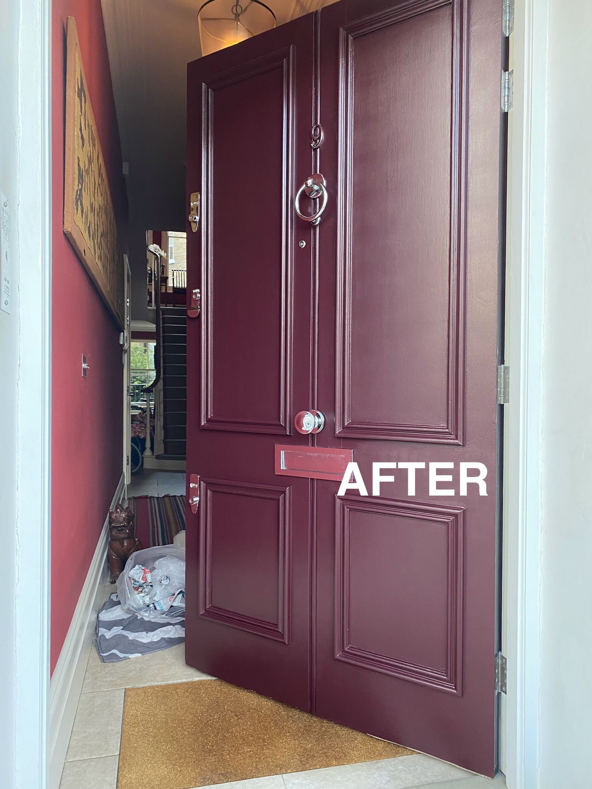
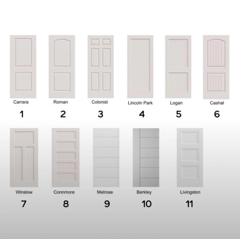
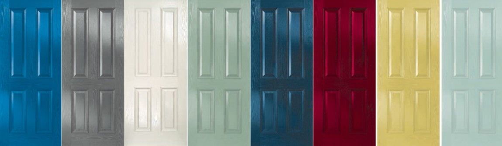
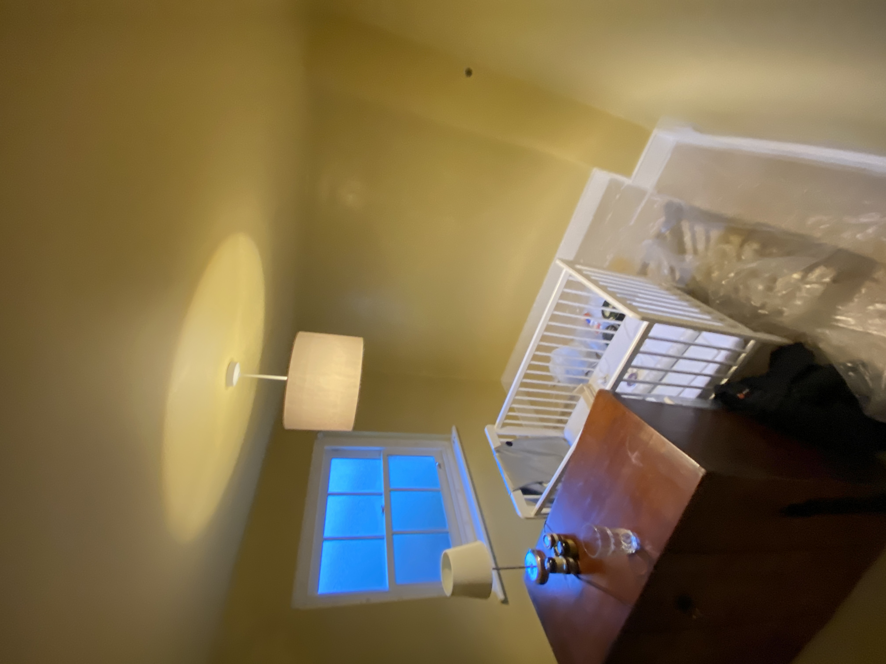

Door Painting Guide: Preparation, Paint Types, Finishes & Professional Techniques
A well-painted door can refresh an entire room. Learn how to prepare different door surfaces, choose a suitable primer and finish, and apply paint for a smooth, durable result.

Doors are among the most frequently touched surfaces in a home. Finger marks, knocks, scratches and repeated contact around handles can gradually make painted doors look tired. A fresh coat of paint can improve their appearance, but doors need a slightly different approach from walls: the surface must withstand regular handling, and brush marks, dust and uneven edges can be more noticeable in changing light.
The right method depends on the door itself. A previously painted timber door, a bare softwood door, a veneered flush door and a factory-finished composite door may all require different preparation and paint systems. Before choosing a colour or finish, identify the surface and check the coating manufacturer's instructions.
What type of door are you painting?
Start by identifying the door material and its existing coating. This helps determine how much preparation is needed and whether a specialist primer is required.

Previously painted timber doors
These are common in older and modern homes. If the existing paint is sound, clean it, lightly abrade the surface and remove all sanding dust before applying the new coating. If paint is flaking, cracked or poorly bonded, remove the defective areas and prepare the exposed surface properly before repainting.
Bare wood doors
New or stripped timber needs a primer or wood primer suitable for the timber and intended top coat. Bare timber can absorb paint unevenly, so follow the specified preparation and priming system. Pay attention to knots and resinous areas: use an appropriate knotting or stain-blocking treatment if the product manufacturer recommends it.
Veneered and flush doors
Veneered doors have a thin decorative timber layer, so aggressive sanding can damage the surface. Use gentle abrasion only where appropriate and avoid sanding through the veneer. For laminate or other very smooth factory finishes, check whether the manufacturer specifies a specialist adhesion primer. Always test the proposed system in an inconspicuous area if compatibility is uncertain.
Previously varnished or glossy doors
Varnish and high-gloss coatings can be difficult for new paint to grip if they are dirty or highly polished. Degrease with a suitable cleaner, rinse if the cleaner requires it, allow the door to dry, and abrade the surface as directed. If the existing coating is failing or its type is unknown, establish a compatible preparation and primer system before proceeding.
Door preparation: the steps that make the difference
Preparation is often the most time-consuming part of painting a door. Rushing this stage can leave visible scratches, raised edges, poor adhesion or an uneven finish. Protect the surrounding floor and fittings before starting.

- Protect the area: cover the floor and nearby surfaces. Keep dust away from furniture and freshly painted walls.
- Remove or protect hardware: remove handles, locks and other fittings where practical. If they cannot be removed, mask them carefully.
- Clean the door: remove grease, hand marks and household contamination using a suitable cleaner. Follow the cleaner's instructions and allow the surface to dry fully.
- Inspect the coating: look for flaking paint, cracks, dents, raised edges and areas where the old finish has failed.
- Sand appropriately: smooth rough edges and lightly abrade sound glossy paint to provide a key. Use care on veneer and thin factory finishes.
- Fill defects: use a suitable filler for small dents or damaged areas. Once dry, sand smooth and remove the dust.
- Prime where needed: apply a compatible primer to bare timber, repairs or difficult surfaces according to the paint system.
Older coatings may contain lead, particularly in older properties. Do not dry-sand or disturb a coating if you suspect it may contain lead. Seek appropriate testing and follow current UK safety guidance before work begins.
Which paint should you use on interior doors?
Choose a product specifically suitable for interior woodwork or the door's particular substrate. Wall emulsion is not normally the right finishing product for a door because it is not designed for the same level of handling and wear as a dedicated trim coating.
Water-based wood and trim paint
Water-based trim paints are widely used for interior doors. They generally have lower odour and faster drying times than traditional solvent-based systems, making them convenient for many occupied homes. They can be applied by brush or suitable mini roller, depending on the product and desired finish. Work carefully and follow the stated open time, recoat time and application guidance.
Oil-based and solvent-based paint
Traditional oil-based or solvent-based systems can offer good flow and a different appearance, but they commonly have a stronger odour and longer drying times. Some products may also yellow over time, particularly in areas with limited natural light. Check current product information, ventilation requirements and suitability before selecting this type of coating.
Hybrid and water-based alkyd systems
Some modern trim paints use hybrid or water-based alkyd technology to combine aspects of traditional flow and modern water-based application. Product performance varies, so compare the technical data sheet rather than relying on the technology name alone.
Door paint finishes: satin, eggshell or gloss?
The finish changes how a door reflects light and how it sits alongside the skirting boards, architraves and other woodwork. There is no single correct finish for every interior. Consider the look of the room, the condition of the door and the product's durability and cleaning instructions.

| Finish | Appearance | Typical consideration |
|---|---|---|
| Matt | Low reflection and a softer appearance | Check that the specific product is designed for woodwork and regular handling. |
| Eggshell | Subtle, low-to-medium sheen | A popular understated option for interior woodwork. |
| Satin | Noticeable but not highly reflective | Provides a slightly brighter finish and is widely used on doors and trim. |
| Gloss | High reflection and a polished appearance | Can highlight surface imperfections, so preparation is especially important. |
Finish names and sheen levels vary between manufacturers. Check the technical information for the exact product rather than assuming that all eggshell, satin or gloss paints have the same appearance or performance.
How to paint a panelled door
Panelled doors have recessed sections, raised mouldings and narrow edges. A planned sequence helps avoid heavy paint build-up in corners and keeps the finish consistent.

- Start with the recessed panels: brush the corners and mouldings carefully, avoiding excessive paint build-up.
- Paint the horizontal rails: work across the top, middle and bottom rails, blending into the panel edges while the paint is workable.
- Paint the vertical stiles: work down the main vertical sections and keep a wet edge where possible.
- Finish the outer edges: coat the edges that are intended to be painted, taking care around hinges and hardware.
- Check the surface: look for runs, drips and heavy corners before the paint begins to set.
- Allow to dry and recoat: follow the manufacturer's recoat time and lightly de-nib between coats only if the product instructions recommend it.
How to paint a flat or flush door
A flush door has a broad, flat surface, so roller marks, dust and uneven application can be easier to see. Use a suitable short-pile or fine-finish mini roller where recommended by the paint manufacturer. A brush can be used for edges and details.
- Cut in the edges and any detailed areas with a suitable brush.
- Apply paint in manageable sections, avoiding large pools of product.
- Keep a consistent direction and maintain a wet edge as you work.
- Finish with light, even passes where the product allows, without repeatedly working paint that has started to dry.
- Inspect the door from different angles in good light to identify missed areas or uneven coverage.
Should you remove the door before painting?
Not always. Painting a door while it remains on its hinges can be practical when access is good and the door can be left undisturbed while the coating dries. It may also avoid the need to remove and refit heavy doors or adjust hardware.
Removing the door can make it easier to reach the edges and paint both faces, particularly when the work involves repairs or a full change of colour. However, the door must be supported safely, and the coating needs enough time to dry before it is handled or rehung. Follow the product guidance for handling and curing times, not just the time it feels dry to the touch.
Common door-painting problems and how to avoid them
| Problem | Possible cause | How to prevent it |
|---|---|---|
| Visible brush marks | Overworking paint, unsuitable brush or paint beginning to dry | Use suitable tools, apply evenly and follow the product's application guidance. |
| Paint does not adhere | Grease, dust, glossy coating or incompatible products | Clean, prepare and prime the surface with a compatible system. |
| Runs and drips | Applying too much paint, especially around mouldings and edges | Use controlled amounts and check detailed areas before the coating sets. |
| Rough finish | Dust, debris, raised fibres or poor surface preparation | Clean thoroughly, remove sanding dust and keep the work area tidy. |
| Uneven colour or coverage | Insufficient coats, poor opacity or inconsistent application | Use the specified coating system and apply the recommended number of coats. |
| Door sticks to the frame | Paint has not cured sufficiently or too much coating has built up | Allow adequate drying and curing time before closing the door firmly. |
How many coats does a door need?
The number of coats depends on the existing colour, the new colour, the condition of the surface and the paint system. A straightforward repaint over a sound, similar-coloured finish may need fewer preparatory steps than a change from dark varnish to a pale painted finish.
As a general planning guide, a door may need a primer or undercoat on bare or repaired areas, followed by two finishing coats. This is not a universal specification: some products are designed as self-undercoating systems, while others require a dedicated primer and undercoat. Follow the product data sheet and do not apply another coat until the previous one has reached the stated recoat stage.
How long does door paint take to dry?
Drying and curing are not the same. A surface may feel dry while the coating is still soft and vulnerable to fingerprints, sticking or damage. Drying time depends on the product, temperature, ventilation, humidity, film thickness and the condition of the substrate.
Keep the room ventilated as directed by the manufacturer and avoid closing the door against its frame until the coating is ready. Where possible, allow extra time before refitting hardware, cleaning the surface or subjecting it to heavy use.
Professional door painting: what affects the result?
A professional finish is not simply a matter of applying paint neatly. The condition of the original coating, the quality of repairs, the choice of primer, dust control and the time allowed between coats all affect the final result. Good lighting also helps identify runs, missed edges and surface defects before the paint dries.
For a consistent finish across several doors, it is worth planning the sequence, keeping the same product system throughout and checking that the colour and sheen match the surrounding woodwork. If the doors have different substrates or existing coatings, they may not all be suitable for exactly the same preparation method.
Door painting FAQs
Do I need to sand a door before painting?
Most previously painted doors benefit from cleaning and light sanding to smooth imperfections and provide a suitable key. Bare wood, damaged paint and glossy surfaces may need additional preparation. Avoid aggressive sanding on veneer and remove dust thoroughly before coating.
Can I paint a door without removing it?
Yes. Many interior doors can be painted while hanging, provided you can reach the surfaces safely and leave the door undisturbed while it dries. Removing it may make the edges and both faces easier to access, but it is not essential for every project.
Should I use water-based or oil-based paint on doors?
Both can be suitable when the product is designed for the substrate and compatible with the existing coating. Water-based trim paints generally have lower odour and faster drying times. Oil-based products have different application and drying characteristics. Check the technical data sheet before choosing.
What is the best finish for interior doors?
Eggshell, satin and gloss are common choices. Eggshell gives a more subtle appearance, satin has a noticeable sheen and gloss is highly reflective. Select a product made for interior woodwork and consider how it will look alongside the rest of the room.
How many coats of paint does a door need?
A typical repaint may need two finishing coats, with primer or undercoat where required. The exact number depends on the door, colour change and product specification. Follow the manufacturer's instructions.
Can I use wall paint on a door?
Standard wall emulsion is not normally the best choice for a frequently handled door. Use a coating designed for interior woodwork or the specific door material, and follow the recommended primer and preparation system.
Conclusion: preparation creates the finish
A smooth, durable painted door starts with identifying the surface and preparing it properly. Clean away contamination, repair defects, sand carefully, choose a compatible primer where necessary and use a suitable top coat. Whether you prefer eggshell, satin or gloss, careful application and adequate drying time help achieve a consistent result.
Sources and further guidance
- Dulux – Interior wood and metal paint product information and preparation guidance.
- Dulux Trade – Product technical data sheets and application guidance.
- Johnstone's Trade – Woodwork coatings and technical product information.
- Zinsser – Primer, adhesion and stain-blocking product guidance.
- Crown Paints – Interior wood and trim paint information.
- Health and Safety Executive (HSE) – Guidance on lead paint and safe preparation of older coatings.
Always check the current product label and technical data sheet for substrate suitability, surface preparation, primer requirements, application method, drying times and recoat intervals. Product formulations and instructions can change.